Trang chủ / Chuyên đề 7: Hồ Sơ Các Chủng Tộc / Kỳ 70
Chuyên đề 7 · Kỳ 70 / 90
HỘI ĐỒNG 5 NGƯỜI (COUNCIL OF FIVE), CÁC CHỦNG TỘC BẢO HỘ THIÊN HÀ & CÁC NỀN VĂN MINH ĐỘC LẬP

Kỳ này trình bày hồ sơ sinh học của 13 chủng tộc thuộc khu vực Hội Đồng 5 Người (Council Of Five) & Các Chủng Tộc Bảo Hộ Thiên Hà. Mỗi hồ sơ gồm hình dáng, chiều cao, đặc điểm sinh học – giác quan, và vai trò trong bức tranh thiên hà.
Emerther (Hành tinh Tau Ceti E — Council of Five)
- Hình dáng & Chiều cao: Cao 1,0m; đầu to tròn, tay 3 ngón. Có chiếc mũi nhỏ nổi rõ trên khuôn mặt. Da xám nhạt, mắt xanh dương.
- Đặc điểm Sinh học & Giác quan: Máu lỏng dĩ thái trong suốt, sinh sản nhân bản.
- Đặc tính & Vai trò Thiên hà: Hòa bình; Phát ngôn viên Hội Đồng 5 Người bảo vệ Trái Đất.
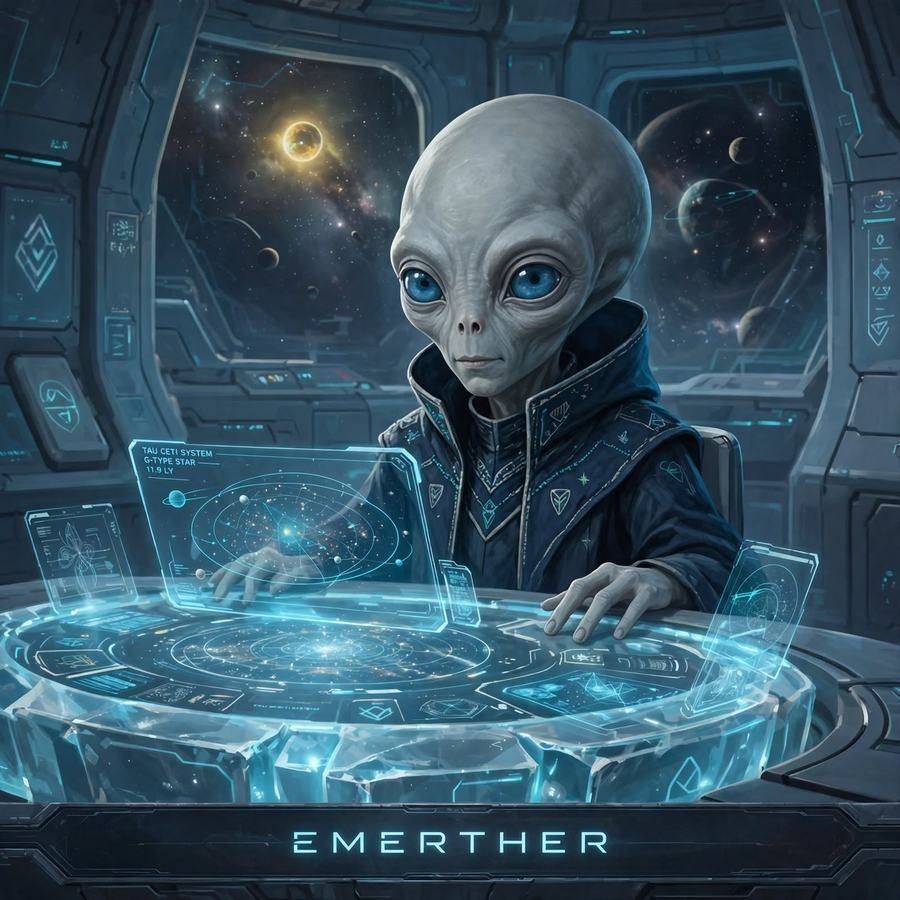
Egaroth (Hệ sao Meissa / Daro — Orion / Council of Five)
- Hình dáng & Chiều cao: Khổng lồ cao 2,7m – 3,2m; da xám nhạt ngả xanh lam, đầu hói, mắt to bạc pha lê.
- Đặc điểm Sinh học & Giác quan: Mật độ 7D–9D, não lượng tử. Lưỡng tính phân cực. Tuổi thọ 3.000 – 5.000 năm.
- Đặc tính & Vai trò Thiên hà: Hòa bình; Hiền triết cổ xưa nhất Hội Đồng 5 Người.
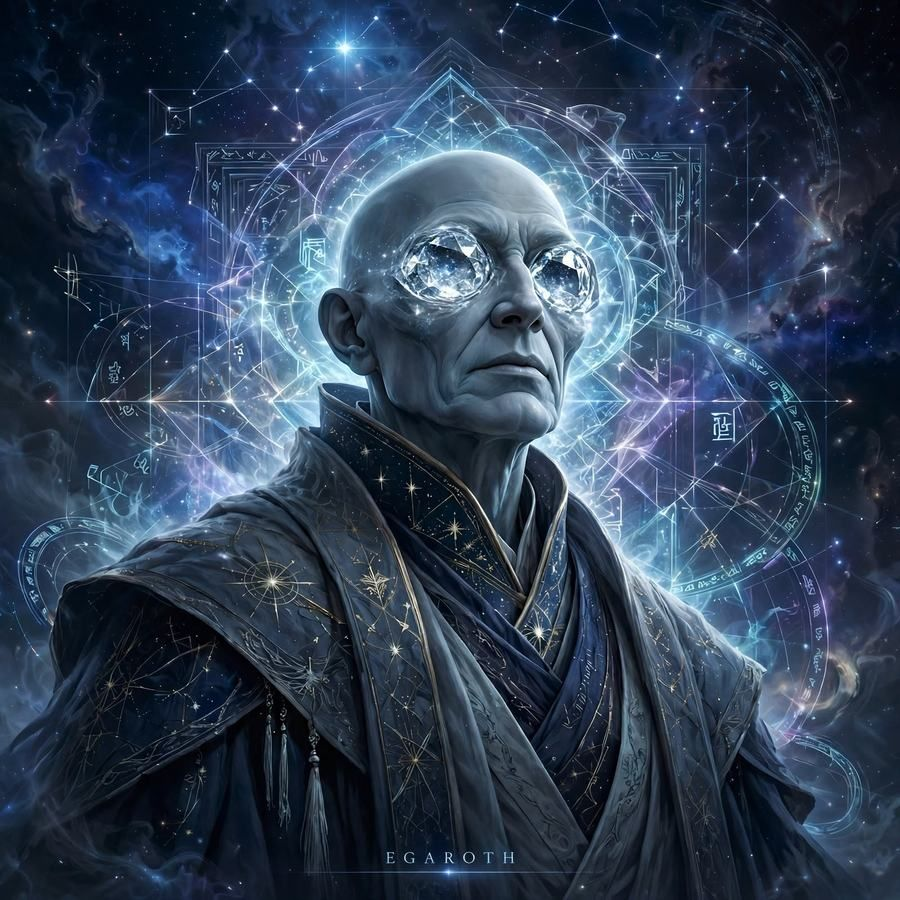
Redan (Chòm sao Cassiopeia — Council of Five)
- Hình dáng & Chiều cao: Cao 1,9m – 2,2m; da trắng ngà phát quang, tóc vàng/bạc, mắt xanh chàm.
- Đặc điểm Sinh học & Giác quan: Tự điều biến tần số tế bào thích nghi khí quyển. Tuổi thọ 1.200 năm.
- Đặc tính & Vai trò Thiên hà: Hòa bình; chuyên hòa giải xung đột thiên hà.
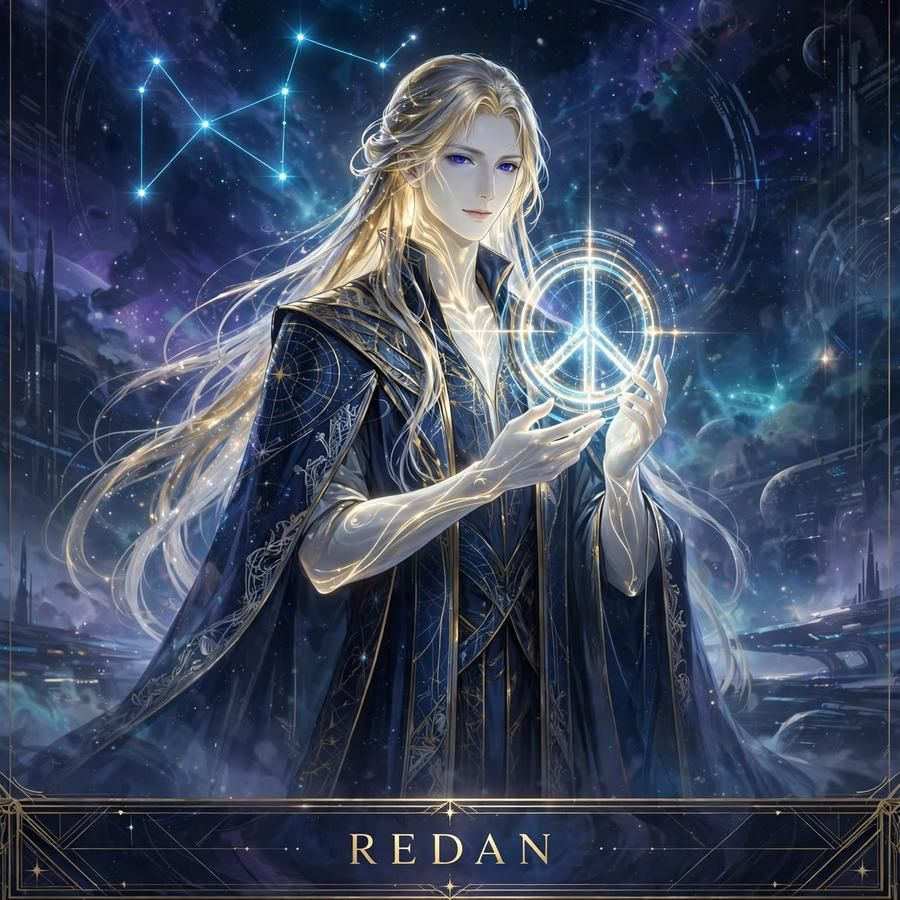
Orela (Chòm sao Pegasus — Council of Five)
- Hình dáng & Chiều cao: Cao 1,2m – 1,4m; da xanh da trời nhạt, mắt vàng phát sáng.
- Đặc điểm Sinh học & Giác quan: Tồn tại ở 5D/6D, biến cơ thể thành màng quang phổ.
- Đặc tính & Vai trò Thiên hà: Hòa bình; thao túng năng lượng ánh sáng.
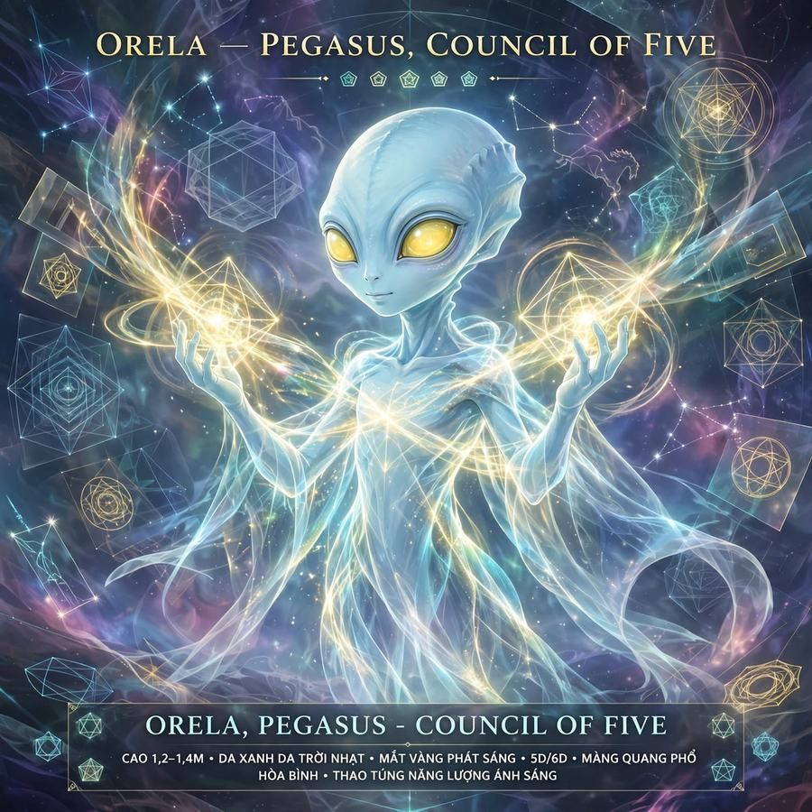
Ginvo (Chòm sao Procyon / Canis Minor — Council of Five)
- Hình dáng & Chiều cao: Cao 1,7m – 1,9m; da đồng nhạt, hói, mắt xanh ngọc lục bảo.
- Đặc điểm Sinh học & Giác quan: Mặc đồng phục bảo hộ xám bạc.
- Đặc tính & Vai trò Thiên hà: Hòa bình; Bậc thầy bảo an Cổng Sao.
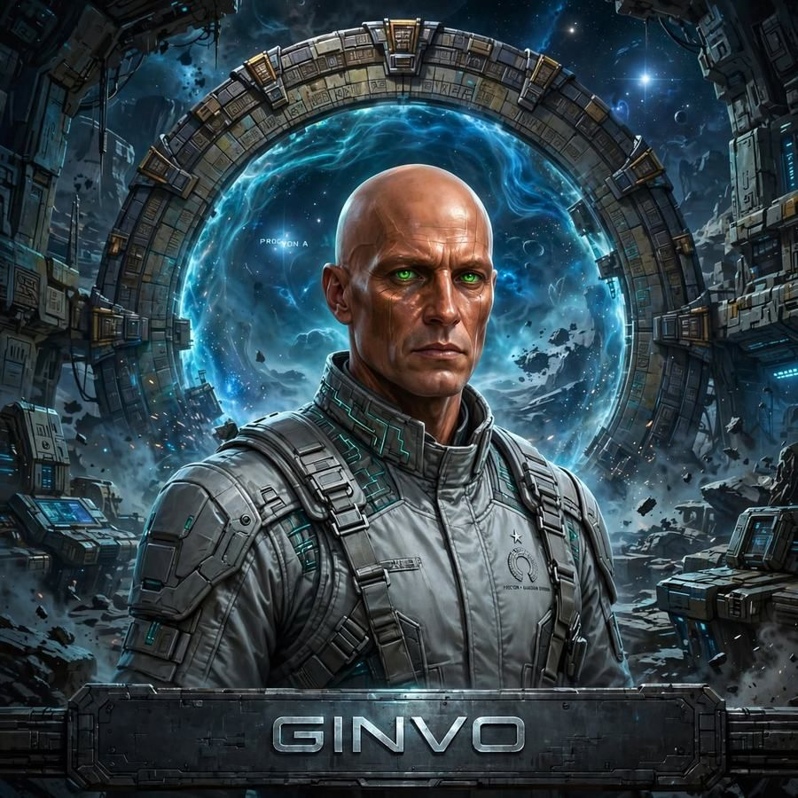
Akart (Hành tinh Neper — Epsilon Eridani / Sextans)
- Hình dáng & Chiều cao: Cao 1,65m – 1,8m; da trắng nhợt, hói, mắt đen.
- Đặc điểm Sinh học & Giác quan: Tàu đĩa dẹt di chuyển vận tốc bẻ cong không-thời gian.
- Đặc tính & Vai trò Thiên hà: Hòa bình; tò mò nghiên cứu, không bắt cóc con người.
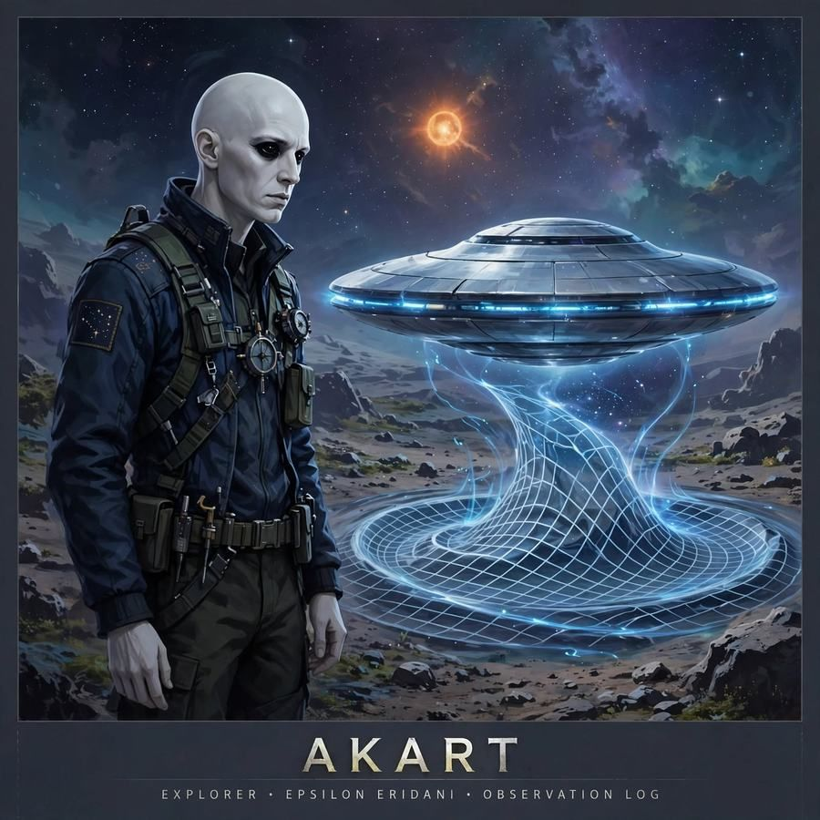
Tanzany (Hệ sao Epsilon Indi)
- Hình dáng & Chiều cao: Cao 1,8m – 2,0m; da xám nhạt ngả hồng, mắt tím dịu.
- Đặc điểm Sinh học & Giác quan: Đọc và chữa lành tổn thương tâm lý qua thần giao cách cảm.
- Đặc tính & Vai trò Thiên hà: Hòa bình; bác sĩ tâm lý thiên hà.
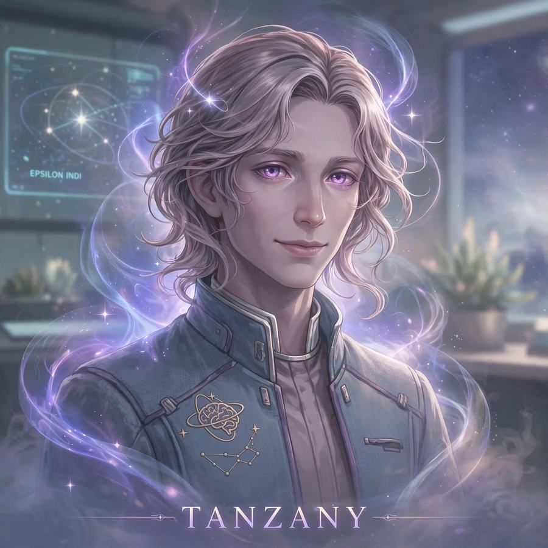
Strom (Chòm sao Ursa Major / Đại Hùng Tinh)
- Hình dáng & Chiều cao: Khổng lồ cao 3,0m – 3,5m; da đồng sẫm, tóc râu nâu, mắt xanh lá sâu.
- Đặc điểm Sinh học & Giác quan: Thuần ăn thực vật khoáng chất. Tuổi thọ hàng ngàn năm.
- Đặc tính & Vai trò Thiên hà: Hòa bình; cư dân Bắc Cực Thiên Hà.
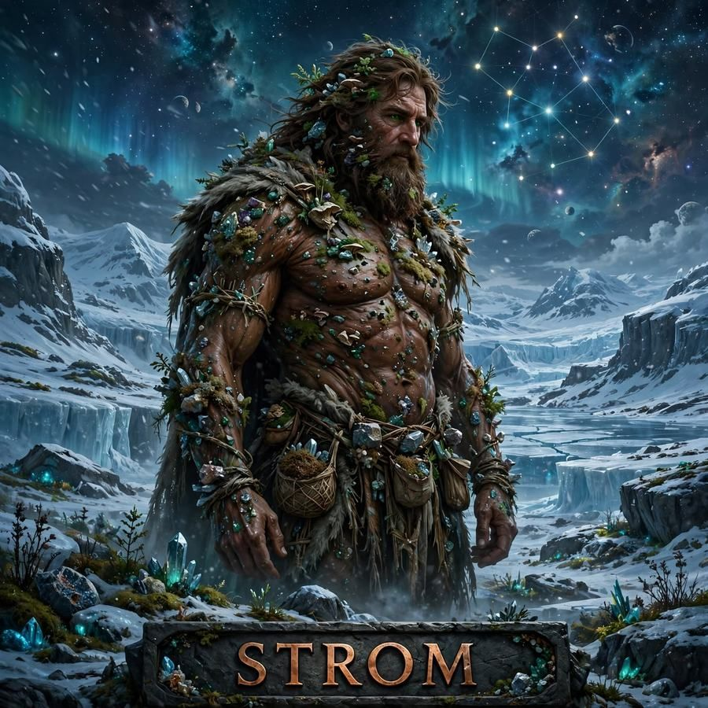
Jefok (Hệ sao Epsilon Indi)
- Hình dáng & Chiều cao: Cao 1,6m – 1,8m; khuôn mặt trông như đang đeo mặt nạ.
- Đặc điểm Sinh học & Giác quan: Hệ thần kinh nhạy cảm bức xạ hạt nhân.
- Đặc tính & Vai trò Thiên hà: Hòa bình; từng phát thông điệp cảnh báo chính phủ hạt nhân năm 1965.
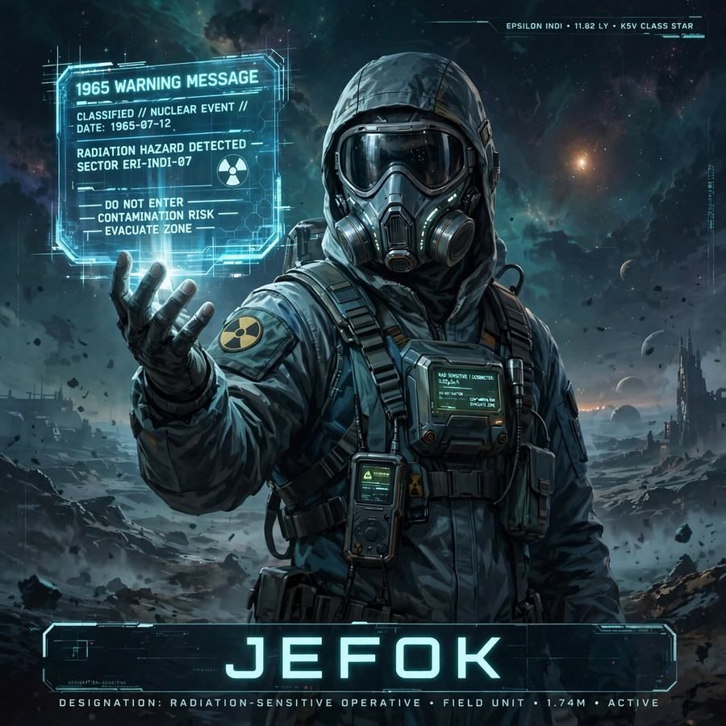
Lang (Hành tinh Coma 6 — Coma Berenices)
- Hình dáng & Chiều cao: Tí hon chỉ cao 70 cm (2 ft).
- Đặc điểm Sinh học & Giác quan: Thể trạng nhỏ bé, di chuyển nhanh lẹ.
- Đặc tính & Vai trò Thiên hà: Hòa bình; cứu con người khỏi Bò sát; nguồn gốc truyền thuyết Tiên nữ / Người tí hon Bắc Âu.
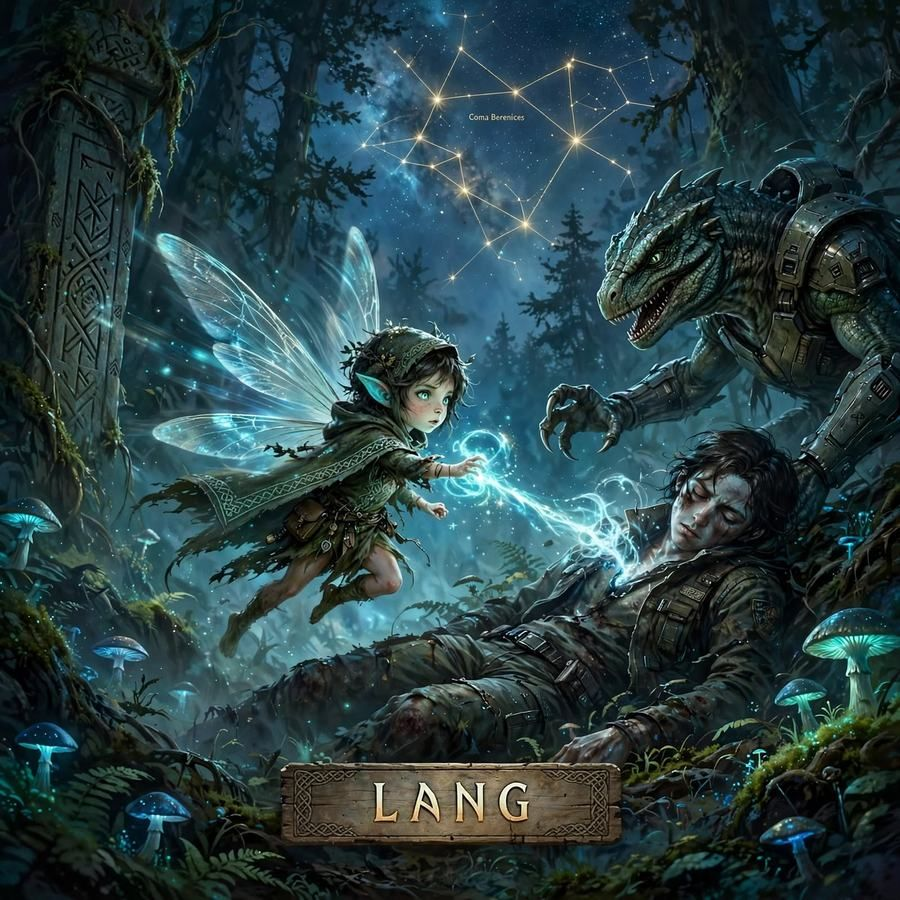
Tengri-Tengri (Hành tinh Tengri — F-1342)
- Hình dáng & Chiều cao: Cao 1,5m – 1,7m; da xám nhạt.
- Đặc điểm Sinh học & Giác quan: Sống dưới lòng đất, không cần bầu khí quyển/nước.
- Đặc tính & Vai trò Thiên hà: Hòa bình; tàu chứa 5 triệu cư dân.
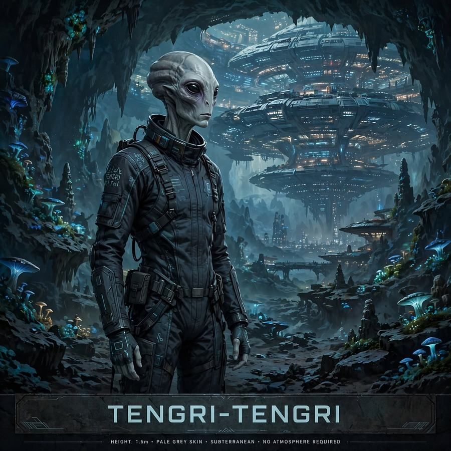
Koldasii (Hành tinh Naara & Entu / Venus & Neptune)
- Hình dáng & Chiều cao: Sinh mệnh đa chiều 5D–6D; dạng quang thể lơ lửng.
- Đặc điểm Sinh học & Giác quan: Giao tiếp hoàn toàn qua quét thần giao cách cảm.
- Đặc tính & Vai trò Thiên hà: Hòa bình; hỗ trợ Liên minh Trái Đất.
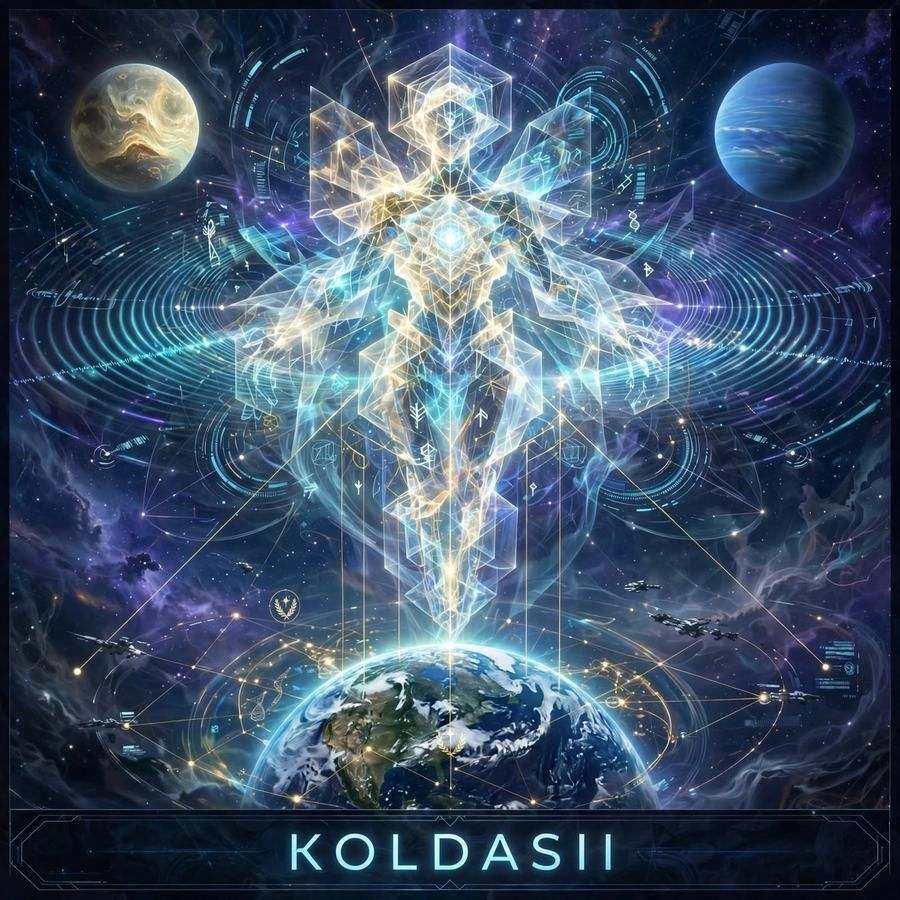
Ramay (Hệ sao Capella / Auriga)
- Hình dáng & Chiều cao: Cao 1,8m – 2,0m; da bánh mật.
- Đặc điểm Sinh học & Giác quan: Du hành xuyên chiều.
- Đặc tính & Vai trò Thiên hà: Hòa bình; từng giúp xây dựng các công trình căn chỉnh thiên văn cổ đại 2.500 năm trước.
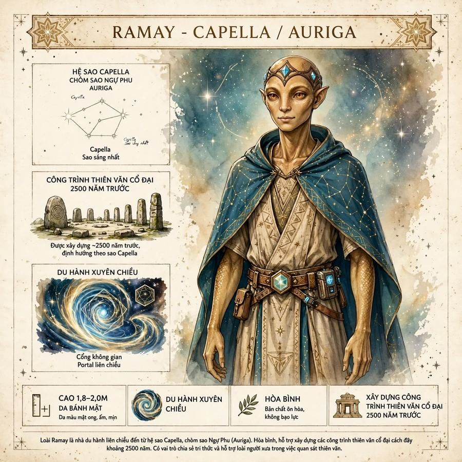
Negumak / Gnomopo (Hành tinh Gnomopo — Ngôi sao Antares / Chòm sao Scorpius)
- Hình dáng & Chiều cao: Phi hình người (non-humanoid), to lớn đồ sộ. Diện mạo giống nhện khổng lồ kết hợp khuôn mặt người và các xúc tu mọc từ đầu. Tàu du hành kim loại bóng tối cấu trúc hình học phức tạp.
- Đặc điểm Sinh học & Giác quan: Thể xác ái nam ái nữ (androgynous), sinh sản đẻ trứng và thụ tinh khi trứng trưởng thành. Năng lực kiểm soát tâm trí siêu việt.
- Đặc tính & Vai trò Thiên hà: Độc lập/Hòa bình có điều kiện. Chủng tộc cổ xưa gieo rắc nỗi sợ hãi cho cả Đế chế Bò sát Ciakahrr và tập thể Nebu. Năm 2020, GFW đề nghị Negumak can thiệp tạo áp lực trục xuất phe tiêu cực khỏi Hệ Mặt Trời. Tiếp xúc chính phủ Trái Đất năm 1989; nguồn cảm hứng tạo hình trong phim Independence Day.
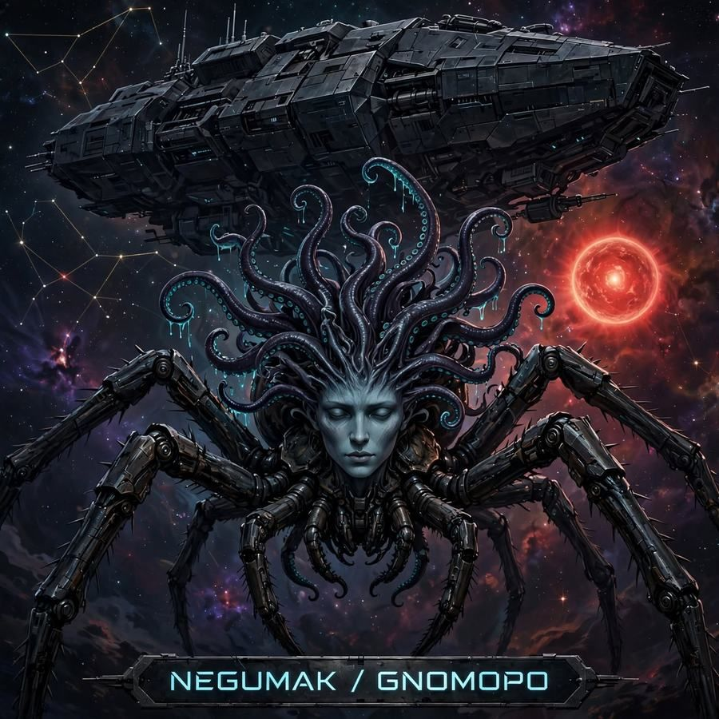
Akara / Mantis (Thiên hà Sombrero M104 — Chòm sao Xử Nữ)
- Hình dáng & Chiều cao: Côn trùng Bọ ngựa đứng thẳng cao tới 2,7m. Đầu hình chữ V, mắt to xếch kéo dài hai bên. Gồm 3 dòng màu sắc: Xanh lục, Trắng và Black Mantis (viền giáp cơ thể màu đen bóng).
- Đặc điểm Sinh học & Giác quan: Vận hành từ 3D đến 9D, xã hội mẫu hệ Tổ ong. Bậc thầy về khoa học tần số, di truyền rung động và điều biến mô hình hình học 3D.
- Đặc tính & Vai trò Thiên hà: Độc lập/Trung lập. Dòng Black Mantis tò mò khoa học và tích cực hỗ trợ quá trình thức tỉnh nhận thức của con người Trái Đất.
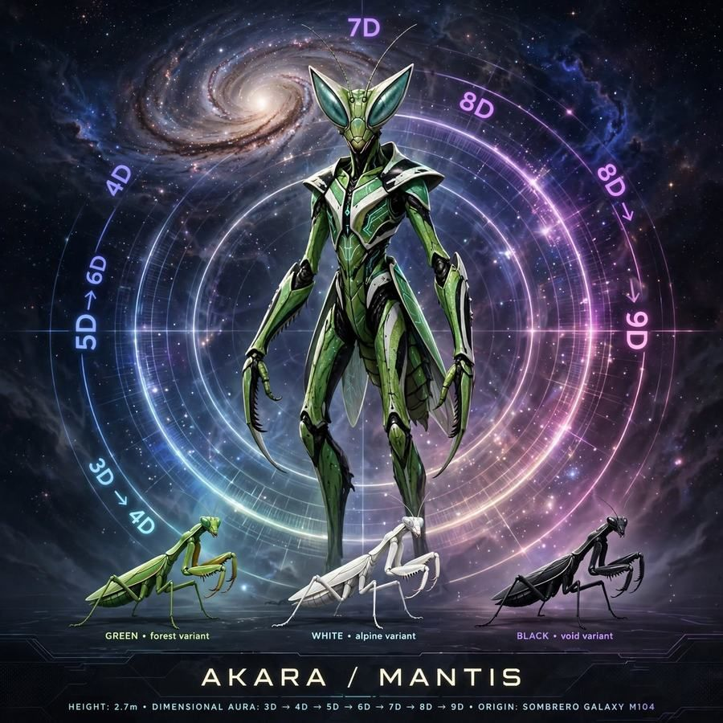
N'Torii / Endorians (Hành tinh N'Tora — Hệ sao Antares / Chòm sao Scorpius)
- Hình dáng & Chiều cao: Sinh mệnh ngoại chiều (9D–11D). Cơ thể cấu tạo từ ánh sáng và vật chất dĩ thái nhịp nhàng, liên tục biến đổi quang phổ.
- Đặc điểm Sinh học & Giác quan: Không sử dụng tàu vật lý cơ học, di chuyển không gian bằng phương thức cộng hưởng ý thức đa chiều.
- Đặc tính & Vai trò Thiên hà: Hòa bình tuyệt đối; đồng minh cao cấp hỗ trợ GFW nâng cấp và làm sạch mạng lưới địa từ Trái Đất.
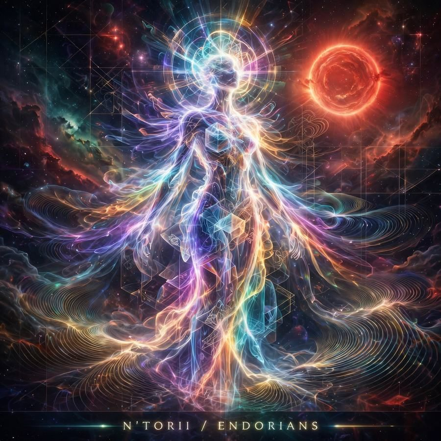
Mazarek / Green-Goggles Aliens (Hệ sao đôi Mzaar / Beta Camelopardalis)
- Hình dáng & Chiều cao: Cao 1,5m; diện mạo lai giữa bò sát và côn trùng, đặc trưng luôn đeo kính bảo hộ sinh học màu xanh lục che kín mắt.
- Đặc điểm Sinh học & Giác quan: Thích nghi môi trường bức xạ khí quyển kép. Mắt cực kỳ nhạy cảm với dải quang phổ dĩ thái.
- Đặc tính & Vai trò Thiên hà: Tiêu cực/Xâm lược; thuộc Liên minh Orion, du hành bằng tàu đĩa bay cổ điển.
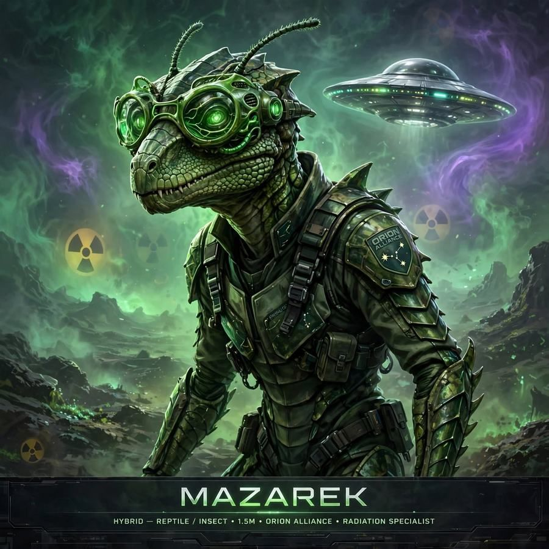
Killimat-Arr / K-Arr (Hệ sao Arr / Gamma Crux — Chòm sao Nam Thập Tự)
- Hình dáng & Chiều cao: Cao lớn, da xám ngả nâu sẫm, diện mạo khó nhận diện trực tiếp bằng mắt thường.
- Đặc điểm Sinh học & Giác quan: Bẻ cong trường từ trường xung quanh cơ thể. Quân đội phải phát triển radar và camera cảm biến quang phổ đặc biệt mới phát hiện được.
- Đặc tính & Vai trò Thiên hà: Bí ẩn/Trung lập; xuất hiện nhiều tại khu vực Tam Giác Bermuda.
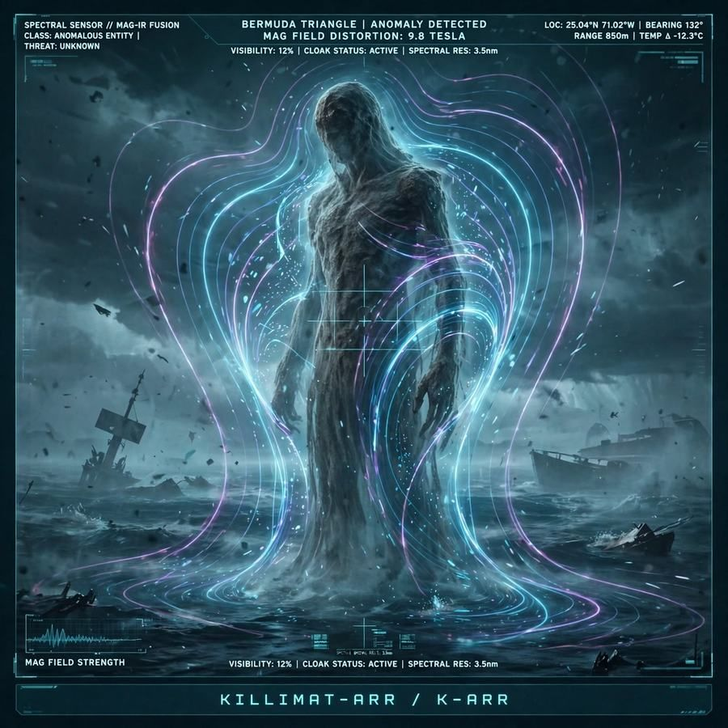
Ogolong / Orange (Hành tinh Orega — Hệ sao Barnard / Chòm sao Ophiuchus)
- Hình dáng & Chiều cao: Bò sát hình người da màu cam hoặc vàng đồng, tóc dài từ vàng đến đỏ rực.
- Đặc điểm Sinh học & Giác quan: Mang di truyền Bò sát nhưng sở hữu cơ quan sinh sản tương đồng hình người.
- Đặc tính & Vai trò Thiên hà: Tiêu cực; hợp tác với tập thể Ciakahrr trong các vụ bắt cóc và khai thác tài nguyên. Tàu dạng boomerang cong ngược.
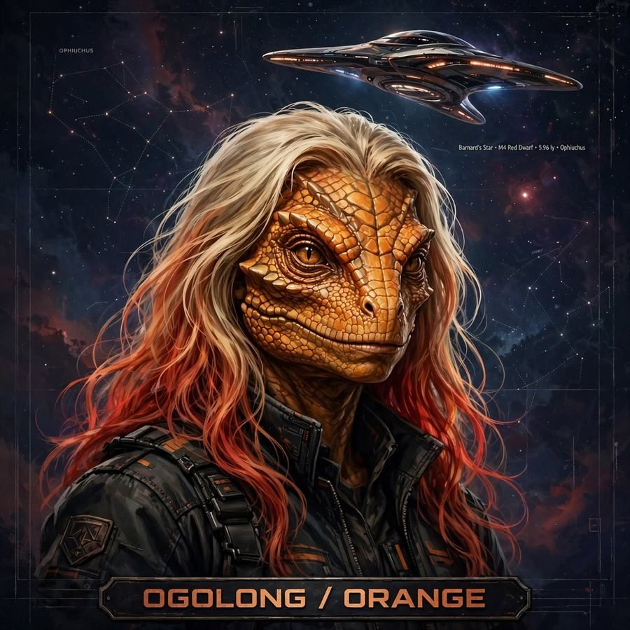
Al-Gruualix (Hành tinh Orgona — Hệ sao Assari / Chòm sao Cetus)
- Hình dáng & Chiều cao: Cao 1,8m – 2,0m; da vảy mịn trông giống bò sát nhưng không thuộc dòng di truyền Bò sát.
- Đặc điểm Sinh học & Giác quan: Sở hữu 8 giới tính sinh học riêng biệt có thể phối giống với nhau. Sống trong khí quyển rừng mưa nhiệt đới đậm hơi nước. Tuổi thọ 350 năm.
- Đặc tính & Vai trò Thiên hà: Trung lập/Bí ẩn; không can thiệp chiến tranh thiên hà.
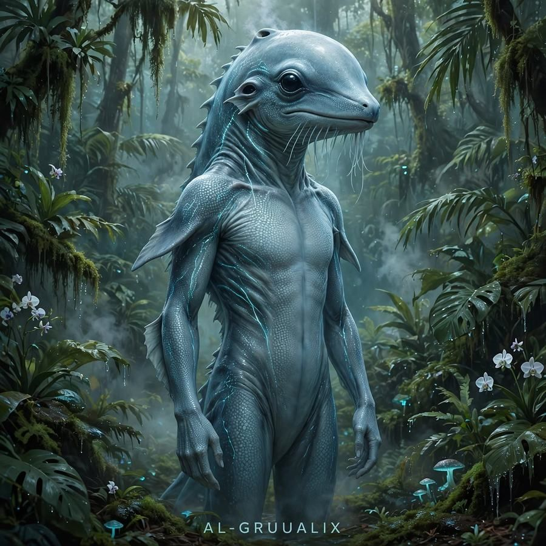
Mythilae "Unukh" (Hệ sao Alya — Unukalhai / Chòm sao Serpens)
- Hình dáng & Chiều cao: Bò sát hình rắn tiến hóa cao; da vảy mịn màu xanh ngọc hoặc nâu sẫm. Tàu du hành di chuyển theo phương thẳng đứng.
- Đặc điểm Sinh học & Giác quan: Hệ thần kinh nhạy cảm với các dải tần số địa từ trường sâu.
- Đặc tính & Vai trò Thiên hà: Trung lập; tồn tại độc lập và tôn trọng trật tự vũ trụ.
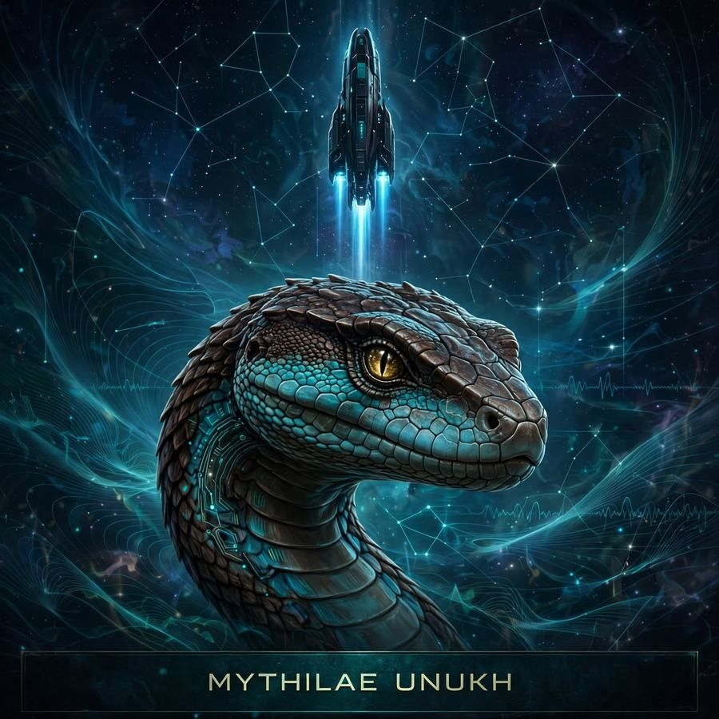
Puritav-Illumu / Nosyv-7 (Hệ sao Mu Vela — Chòm sao Vela)
- Hình dáng & Chiều cao: Lưỡng cư hình người da màu xám nhẵn, hộp sọ thon dài, đôi tai dài nhọn.
- Đặc điểm Sinh học & Giác quan: Hô hấp song hành dưới nước và trên cạn. Khả năng di chuyển và thao túng năng lượng dưới đại dương phi thường.
- Đặc tính & Vai trò Thiên hà: Hòa bình; đóng vai trò người giám sát đại dương và vi cổng liên chiều dưới nước cho GFW.
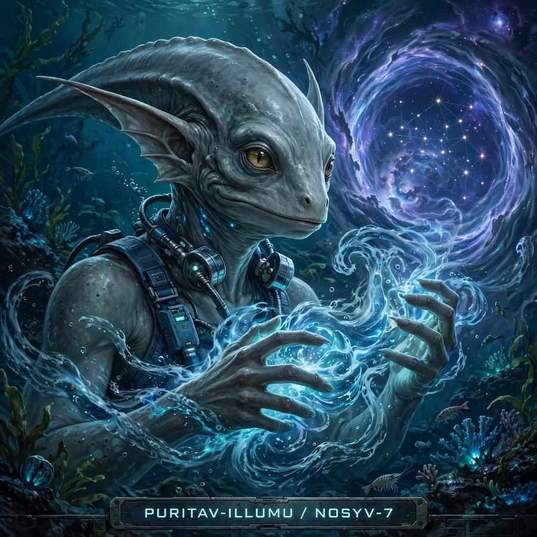
Matrax (Chòm sao Delphinus / Sao Sualocin)
- Hình dáng & Chiều cao: Cao lớn gầy gộc; diện mạo ban đầu dễ gây sợ hãi nhưng bản tính hoàn toàn ôn hòa.
- Đặc điểm Sinh học & Giác quan: Tuổi thọ di truyền lên tới 400 năm.
- Đặc tính & Vai trò Thiên hà: Hòa bình; đã ghé thăm Trái Đất hơn 4.000 năm và được ghi nhận xuất hiện khá nhiều ở thế kỷ 19.
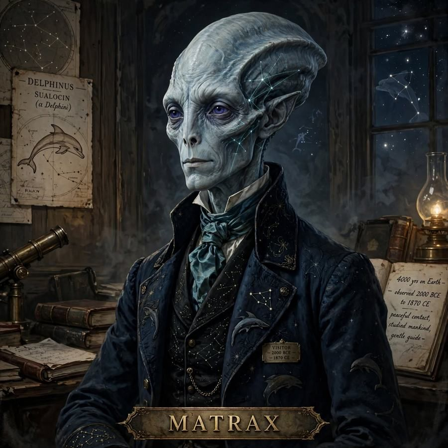